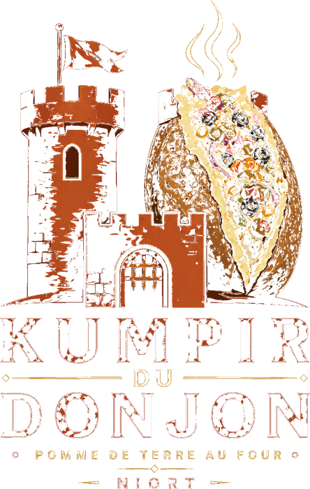

Pomme de terre au four · Niort
Le kumpir arrive à Niort
Manger sain, sans se ruiner.
La spécialité turque, cuite au four et garnie devant vous. Bientôt ouvert, tout proche du Donjon.
Ouverture bientôt
@kumpir.du.donjon